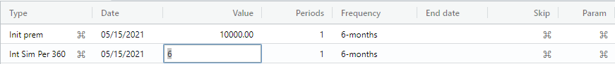
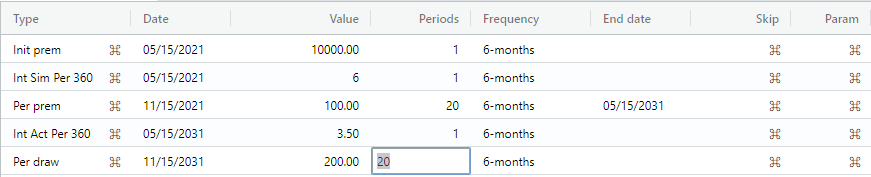

Annuity tutorial overview.
This tutorial presents an annuity with an initial premium, a semi-annual compounding and a guaranteed interest period of 10 years at 6% under the simple interest method (i.e., interest is not compounded back into the principal). Thereafter the renewal interest rate is set at 3.5% under the actuarial method (i.e., interest is compounded back into the principal). In addition, a periodic semi-annual premium of 600.00 is made for the first 10 years. Following that, a semi-annual withdrawal of 1200.00 is paid for the next 10 years with a remaining balance thereafter.
Note: This tutorial meant is for the default en-US locale. If another locale is chosen, the AmFn Wasm will handle the date format, decimal format, currency format, and spoken language resources for that locale.
Create annuity cashflow.
Let's begin by selecting the File -> New menu item. A dialog is displayed asking you to enter a cashflow name and select a template for this cash flow. Please enter the name of your cashflow, select "Standard annuity", and press the Submit button.
A new cash flow is created with a "Initial premium" event preselected for you. Press the Enter key until you are positioned in the "Value" column and enter 10000 (i.e., ten thousand). Finally, Press the Enter key until you are positioned in the "Frequency" column and select a "6-month" (semi-annual) frequency.
Create interest change.
Press the Enter key until a new interest change event is created. Click the small button in the right side of the "Type" column. Change the interest method from "Actuarial" to "Simple interest" and press the Submit button.
Press the Enter key until you are positioned in the "Value" column and enter 6 (i.e., a 6 percent interest rate).

Create periodic premium.
Press the Enter key until a new semi-annual periodic premium event is created. Press the Enter key until you are positioned in the "Value" column and enter 100 (i.e., one hundred). Press the Enter key until you are positioned in the "Periods" column and enter 20 (i.e., 20 semi-annual events = 10 years).
Additional interest change.
Press the "Insert" button and subsequently select "Interest rate" and press the Submit button to create another "Interest" event, except under the default actuarial method. Press the Enter key until you are positioned in the "Value" column and enter 3.5 (i.e., a 3.5 percent interest rate).

Create periodic withdrawal.
Press the "Insert" button and subsequently select "Periodic withdrawal" and press the Submit button to create a semi-annual "Withdrawal" event. Press the Enter key until you are positioned in the "Value" column and enter 200 (i.e., two hundred). Press the Enter key until you are positioned in the "Periods" column and enter 20 (i.e., 20 semi-annual events = 10 years).

On the status line we can see that 21352.11 remains in the annuity.